01 About
I came to UX through design, not around it. Before focusing on user experience, I built a foundation in web design and development and graphic design — so I think about a product's visual system and its underlying structure at the same time, not as separate hand-offs.
My approach stays close to the fundamentals: understand the problem, get to a testable version fast, and use real feedback to decide what changes next. I care about interfaces that hold up under real use — clear at a glance, forgiving of mistakes, and fast to learn.
I'm currently finishing my BASc in User Experience at Full Sail University, building on an Associate's in Graphic Design and an Associate's in Web Design and Development from the same program.
Before UX, I spent 18+ years as a Firefighter/EMT within the U.S. Department of Defense and U.S. Air Force, leading crews of three or more through high-stakes, time-critical operations across five installations — including a multi-day wildland fire response and aircraft crash-rescue work. I'm also a certified Fire Instructor, so training people to execute complex procedure clearly and without wasted steps is second nature — the same instinct that shows up in how I think about onboarding flows and error states in an interface.
02 Selected Work
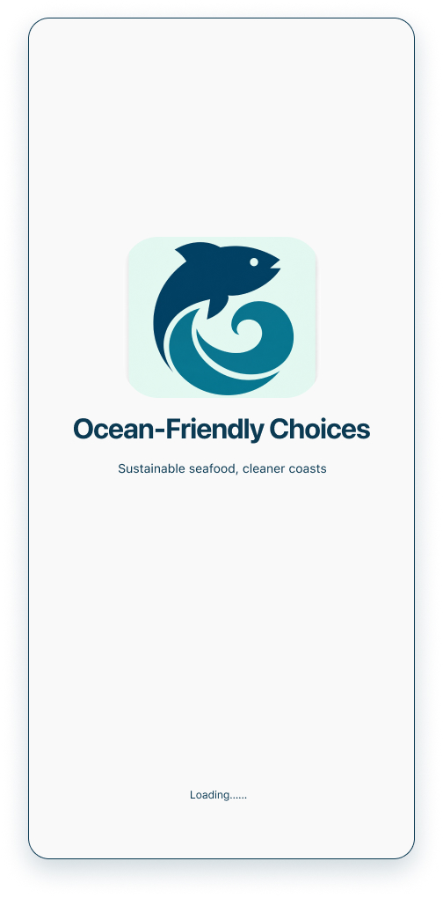
Sustainable seafood, cleaner coasts.
A mobile app concept designed to help everyday shoppers make sustainable seafood choices before they buy — supporting cleaner coasts and healthier ocean ecosystems. Designed and prototyped in Figma as a UX case study.
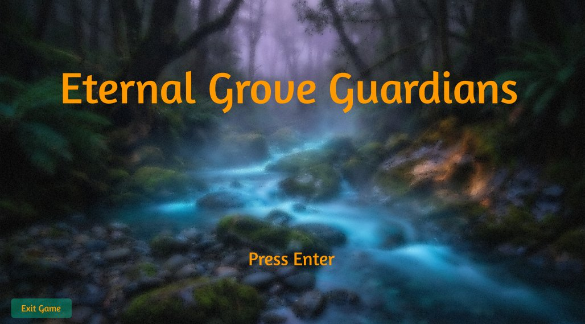
An ARPG where you become the forest's last defender.
Eternal Grove Guardians is an action RPG concept set in a living, bioluminescent forest under siege by creeping corruption. Players awaken as a Forest Guardian, symbiotically bonded to the woods, fighting with vine-whip combos, spirit summons, and glowing elemental blasts.
The design work centered on two personas — a casual explorer seeking relaxing immersion, and a hardcore grinder chasing deep builds and theorycrafting — and shaped everything from onboarding to combat feedback. Competitive research into Genshin Impact, Path of Exile, and Diablo 4 informed a progressive-disclosure tutorial that introduces one mechanic at a time, and a full UI built directly from the project's mood board: vine-wrapped action bars, bioluminescent highlights, and contextual prompts that keep the interface feeling like part of the living world rather than an overlay on top of it.
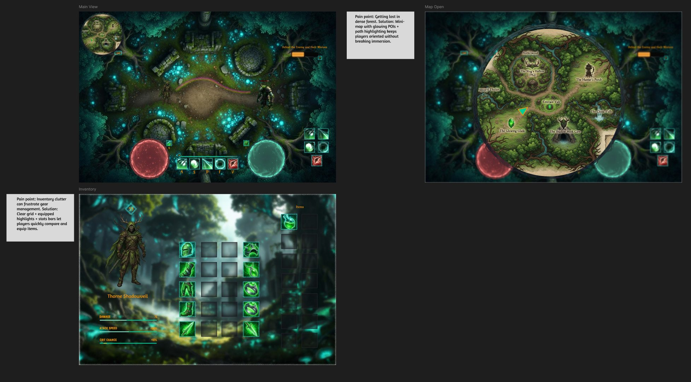
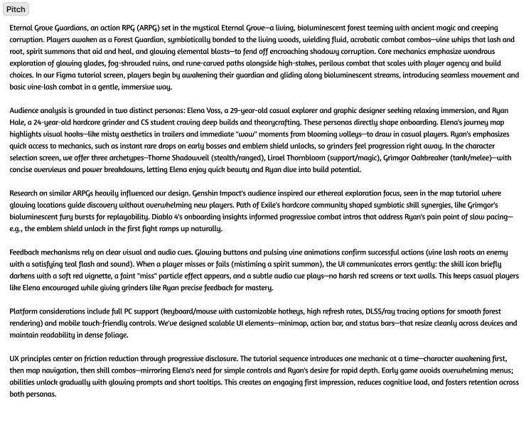
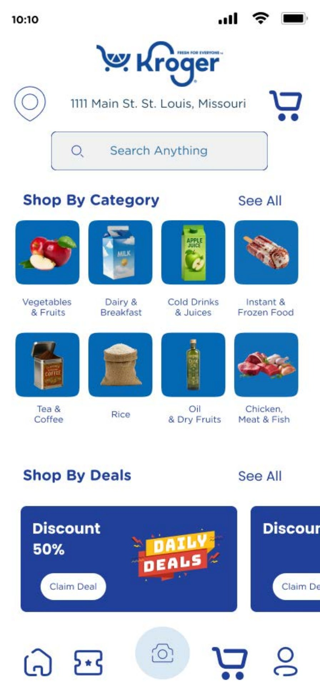
Point your camera, know before you buy.
A grocery shopping app concept for Kroger built around two augmented-reality features layered onto an everyday browse-and-shop flow: an AR "scan to identify" tool that reads a product on the shelf and surfaces its name, price, and current deals, and AR in-store navigation that overlays turn-by-turn directions and highlighted shelf markers on the camera view to guide a shopper straight to the right aisle.
The home and product screens establish the everyday shopping flow — browsing, deals, product detail — before the AR features layer on top of it, so the camera-based tools feel like an extension of a familiar grocery app rather than a separate gimmick.
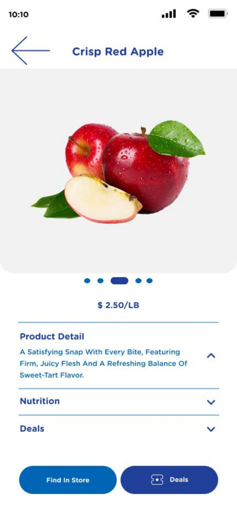
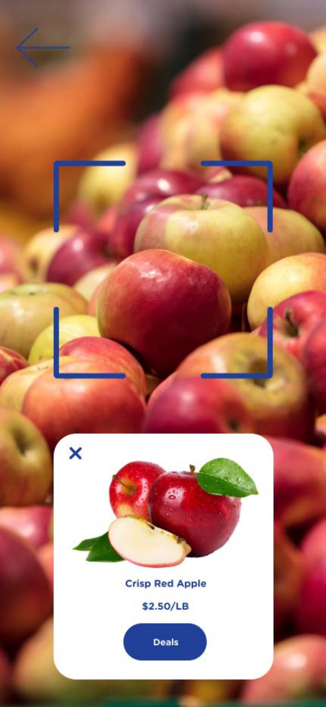
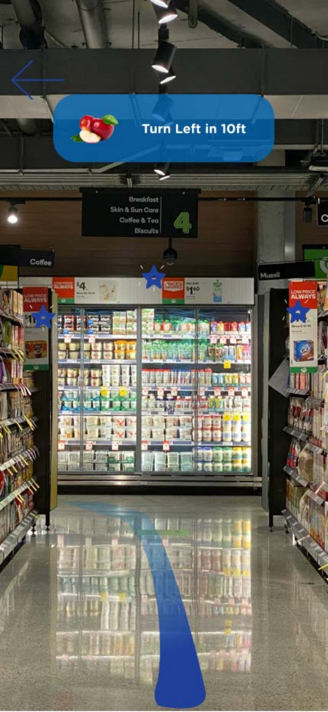
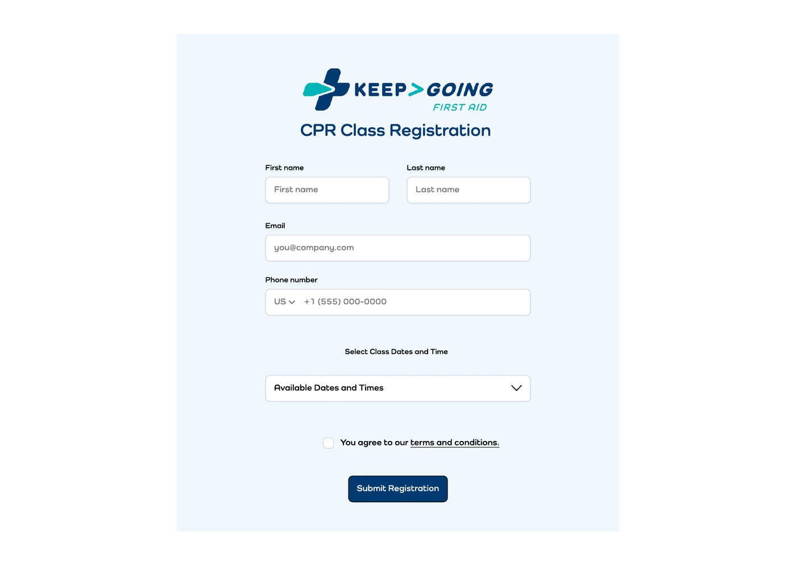
A CPR training business, three roles, one platform.
Keep Going First Aid is a real client project for a CPR and first-aid training business: a web platform covering class registration and three distinct role-based dashboards designed to serve very different day-to-day needs from one system. Students track homework, unit progress, and upcoming activities; instructors manage class rosters, course documents, and their own schedule; owners get a revenue chart and a view of incoming reviews.
The core challenge was designing one coherent visual language that could flex across those three roles without feeling like three separate products bolted together, while keeping the registration flow itself simple enough for a first-time visitor signing up for a class.
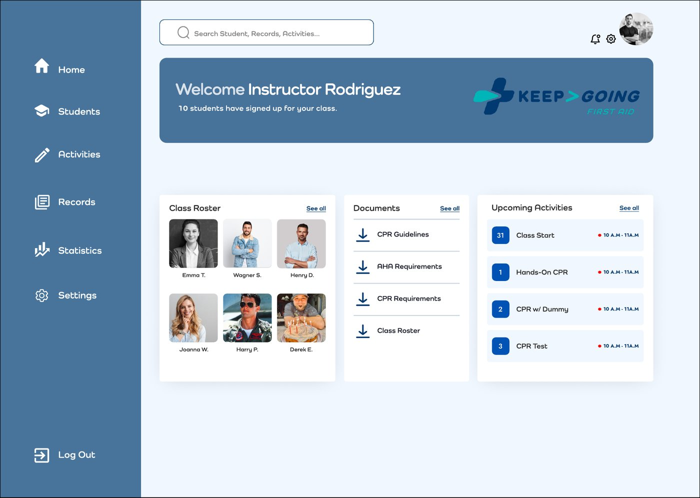
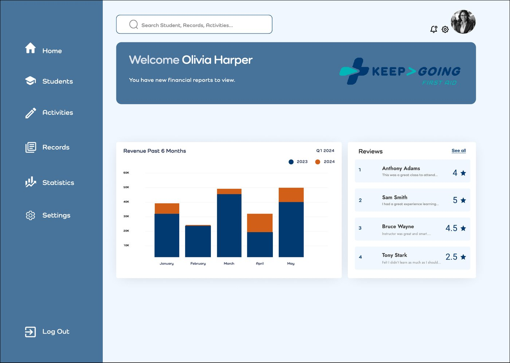
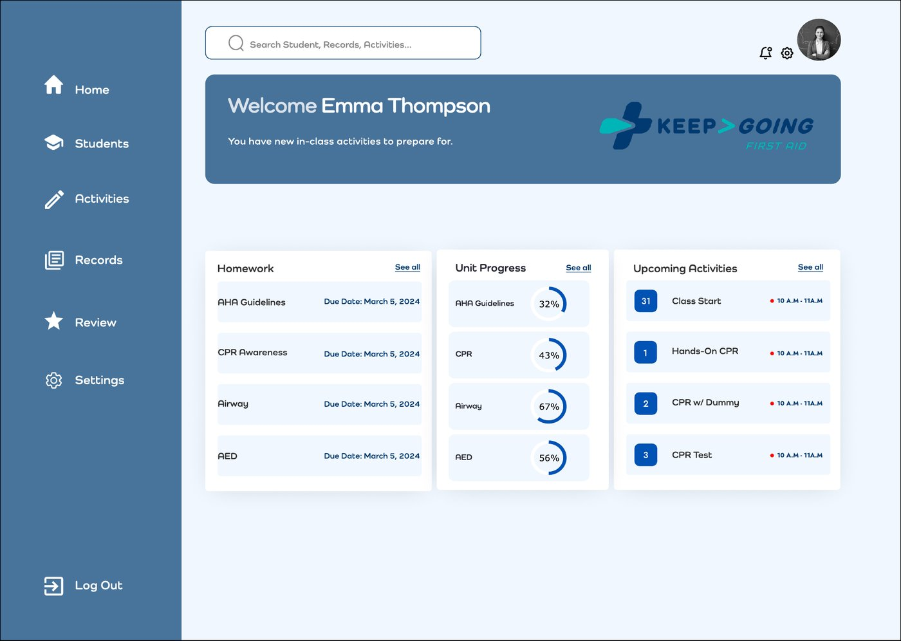
More case studies
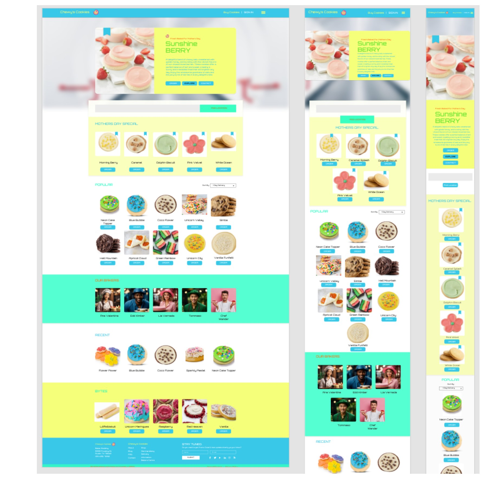
A cookie bakery e-commerce concept designed responsively across web, iPad, and iPhone, with a written retrospective on what worked and what I'd add next — a cart, a custom box builder, and holiday specials.
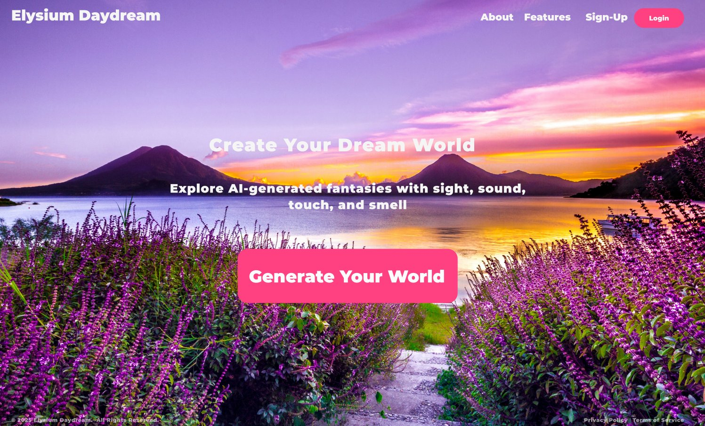
A concept for a multisensory relaxation app that generates a personal dream world from a short prompt, then lets you step into it — explored through login, generator, and landing-screen flows.
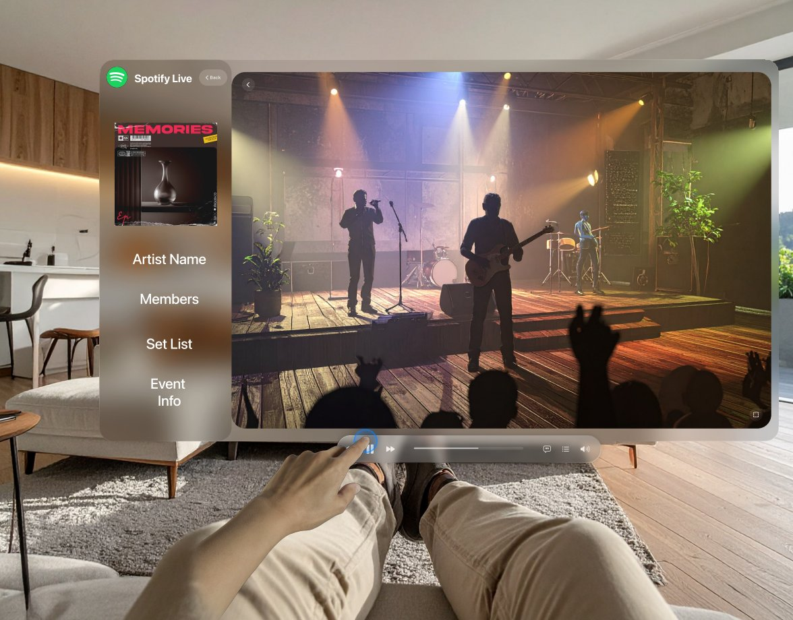
An early concept exploring what it could feel like to attend a concert in VR through Spotify — reimagining a familiar music app as a shared, live, spatial experience.
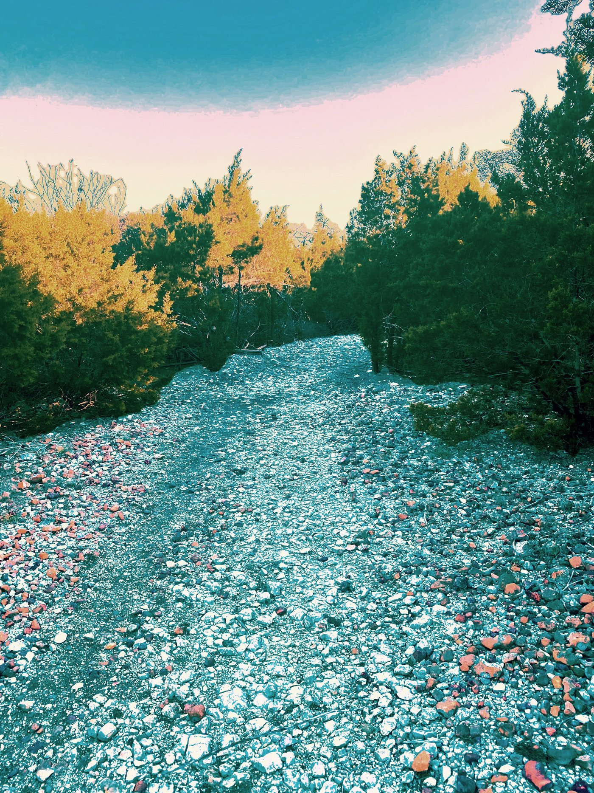
A quiet trail photograph, edited and presented with a short artist's statement — a reminder that the visual instincts behind the UX work started with a camera.
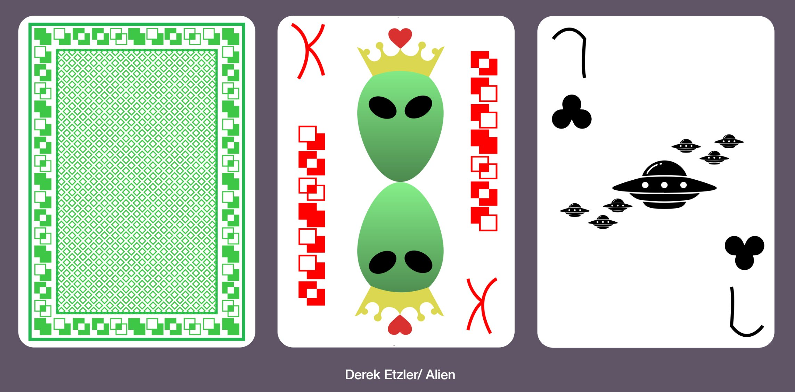
A custom playing card back and face design built around an alien theme — a graphic design exercise in keeping one visual system legible across a full 52-card deck.
03 Skills
04 Resume
Education, skills, and experience in one page.
This links to resume.pdf in the same folder as this page. Swap in an updated file (same filename) any time you revise it.
05 Contact